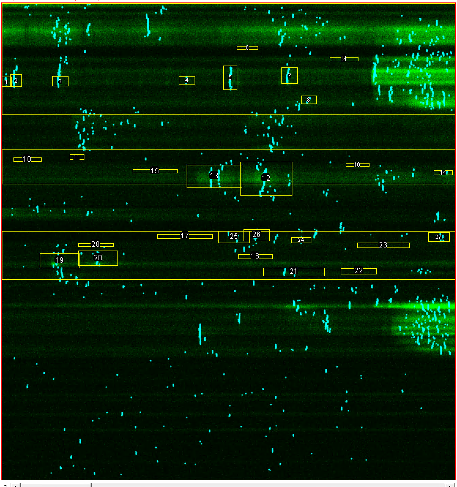

LineScan Analysis Pipeline
- author: Carlos Vivar Rios
- date: 2019-02-25
Iaroslav LS Analysis Pipeline
This diagram was built based on comments and the ImageJ macros by Iaroslav. This Macro can be found in smb://nas-fbm-av1.unil.ch/AV_NAS_PRIVATE/Iaroslav_2/for Erika/ImageJ - linescan
Folder structure
The files are stored in \\nas-fbm-av1.unil.ch\AV_NAS_PRIVATE\Iaroslav_2\Volterra Lab Data\imaging\2Photon. Be care about the Iaroslav folder at UNIL NAS because is a partal copy of this one but without the events analysis.
- Experiments
- /references/
- /LineScan-DDMMYYYY-sX-cXX-XXX-CycleXXXXX-Ch1-16bit-Reference.tif
- /LineScan-DDMMYYYY-sX-cXX-XXX-CycleXXXXX-Ch2-16bit-Reference.tif
- /LineScan-DDMMYYYY-sX-cXX-XXX-CycleXXXXX-Window1-Ch1-8bit-Reference.tif
- /LineScan-DDMMYYYY-sX-cXX-XXX-CycleXXXXX-Window2-Ch1-Ch2-8bit-Reference.tif
- /LineScan-DDMMYYYY-sX-cXX-XXX-CycleXXXXX-Window3-Ch2-8bit-Reference.tif
- /LineScan-DDMMYYYY-sX-cXX-XXX-CycleXXXXX-Window4-Ch1-Ch2-8bit-Reference.tif
- /anal/
- /LineScan-DDMMYYYY-sX-cXX_ch2.roi
- /LineScan-DDMMYYYY-sX-cXX_ch2.txt
- /LineScan-DDMMYYYY-sX-cXX-XXX_CycleXXXXX_Ch1_XXXXXX.ome.tifRegMax.tif
- /RoiSet.zip
- /LineScan-DDMMYYYY-sX-cXX-XXX.env
- /LineScan-DDMMYYYY-sX-cXX-XXX.xml
- /LineScan-DDMMYYYY-sX-cXX-XXX_CycleXXXXX_Ch1Source.tif
- /LineScan-DDMMYYYY-sX-cXX-XXX_CycleXXXXX_Ch2Source.tif
- /LineScan-DDMMYYYY-sX-cXX-XXX_CycleXXXXX_Ch1_XXXXXX.ome.tif [ Multiple files]
- /LineScan-DDMMYYYY-sX-cXX-XXX_CycleXXXXX_Ch2_XXXXXX.ome.tif [ Multiple files]
Analysis
The result of the analysis is the .tif file located in /anal/ folder. This file contains 6 channels and the x axis define time while y axis define the line traced by the microscope, so space.
The channels follow this legend:
| Channels | Pipeline Step | Description |
|---|---|---|
| Channel 01 | Temporal Decimation and Spatial Filter for Microscope Channel 01 | Every 20 timesteps are averaged into 1 and the spatial filter depends on SNR |
| Channel 02 | Temporal Decimation and Spatial Filter for Microscope Channel 02 | Same |
| Channel 03 | \dfrac{\Delta F }{F} with S-G filter from Channel 01 | The Savitzky-Golay filter smooth the curve. |
| Channel 04 | \dfrac{\Delta F }{F} with S-G filter from Channel 02 | The Savitzky-Golay filter smooth the curve. |
| Channel 05 | RegMax amplitude for each pixel from Channel 03 | It uses a threshold. Is defined in the filename rm15.0 and means q5 times the standard deviation of the RegMax amplitude distributions. |
| Channel 06 | RegMax amplitude for each pixel from Channel 04 | Same |
 Figure: Example of the file with the segmentation of the process and soma (Horizontal Bars and the different events ROIs.
IAROSLAV: Now, be careful about the units on the event display window: y is space along line, x is time in decimated units (typically 20 timepoints are averaged into 1!). The ROI coordinates use vertical units (space) correctly (1 pixel in ROI-y is 1 pixel along the line L), but the horizontal (time) units for the ROI need to be recalculated. Note that FWHM for time is shown in time sample points, but ROI x is shown as (sample_points)/(decimation factor)
Criteria to describe events
The characterization of events must take in account different aspect that were compile from different Iaroslav emails:
Some multi-peak events are not properly detected, if the preceding event does not properly decay back to the baseline. In practice, Iaroslav allowed a decay to 10-20%.
Hence is my insistence that the cross-condition comparison is done by the same person: subjective biases will at least be reasonably constant (as opposed to one person analyzing control and another person analyzing the knockout)
LineScan XLSX metadatabase
This excel has the following structure. - First sheet: General information about the experiments. - Second sheet: Ip3 DB - Third sheet: Other DB - GCAMP6 GREEN EVENTS: All the results that we can find in the folders of every experiment. - RED Control Mice EVENTS: - GREEN Control Mice EVENTS:
The spreadsheet is on smb://nas-fbm-av1.unil.ch/AV_NAS_PRIVATE/Vivar/001_LineScan Project/LINESCAN event database Excel 1k_with_ip3KO_Iaroslav_20180828.xlsx
Events sheets
The order of the columns is importat because even if some of them share names it correspond to Ch1 event or Ch2.
In the original xlsx the FWHM are named wrongly FTWH
| Column | Description |
|---|---|
| Cell line ID | ID of the cell |
| Acq sequence | ID of the acquisition including s, c and date |
| Ch1 Event location label | Contains the headers of the next columns related to Ch1 and Ch2 events. |
| x | x coordinate of ROI box |
| y | y coordinate of ROI box. This is the real time an is decimated so to obtain the time must t = y * 20 * Sampling Rate. |
| w | width of ROI box |
| h (manual spatial 'spread' marker) | height of ROI box. Assuming that space is described in the y axis this could be used as a manual spatial marker. |
| Ch1 Event properties label | Contains the headers of the next columns related to Ch1 events. |
| Ampl | Amplitude of the event in channel 1 |
| Baseline | Baseline of the event in channel 1 |
| FWHM time | Temporal expansion of the FWHM in channel 1 |
| FWHM space (automatic calc, buggy, DO NOT USE) | Spatial expansion of the FWHM in channel 1 |
| Ch2 Event properties label | Contains the headers of the next columns related to Ch2 events. |
| Ampl | Amplitude of the event in channel 2 |
| Baseline | Baseline of event in channel 2 |
| FWHM time | Temporal expansion of the FWHM in channel 1 |
| FWHM space (automatic calc, buggy, DO NOT USE) | Spatial expansion of the FWHM in channel 1 |
| Sampling interval (s) | Interval between two images |
| Resolution (micron per pixel) | Equivalency between micrometers and pixels |
| Ch1 Indicator label | Indicator used for channel 1. s: SR101, g6: GCamp6F |
| Ch2 Indicator label | Indicator used for channel 1. s: SR101, g6: GCamp6F |
| Soma middle position (pixels) | Central position of the SOMA If the laser cross the soma twice is not described? |
| Process start (pix) | Coordinate of the process start |
| Process stop (pix) | Coordinate of the process end |
The number of colums will be different because if one cell recording contains more than 1 process will have two extra columns (Process start and Process stop) for every proccess.